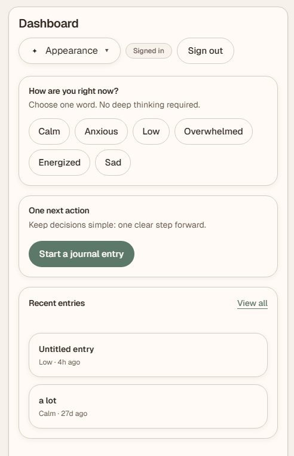

Inkspression
Designed a low-friction journaling and productivity app that helps users start and return without pressure. Focused on simplifying multi-step flows through mood-based entry, reduced onboarding friction, and low-density layouts.